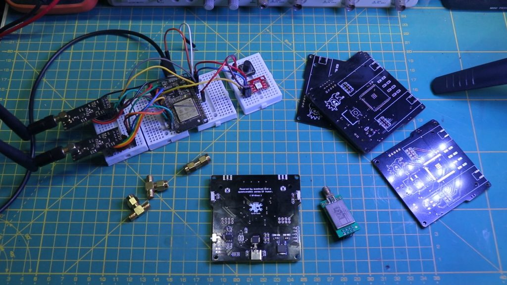
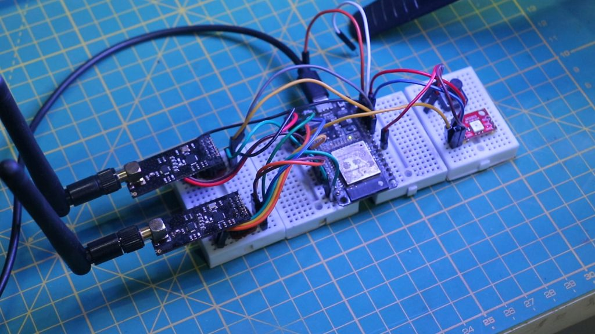
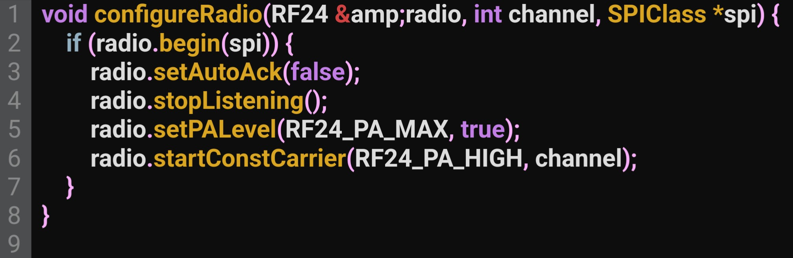

RF-Clown: Your Portable BLE/Bluetooth Jamming Tool
🔧 Introduction
In a world where wireless communication surrounds us, Bluetooth Low Energy (BLE) and Classic Bluetooth are critical components for countless devices. From smartwatches to wireless headphones, these technologies form the backbone of modern connectivity. However, understanding their vulnerabilities and limitations is essential for researchers and enthusiasts alike. Enter RF-Clown, an open-source BLE jammer designed for education and research purposes. The motivation behind RF-Clown was to create a tool that could serve as an example of open-source collaboration. Many similar projects remain closed, limiting their use to a select few. With RF-Clown, all resources—from code to PCB designs—are freely available on GitHub, ensuring transparency and accessibility. This blog post will guide you through the RF-Clown project, detailing its features, design, and implementation. Additionally, we’ll discuss how to build it using a breadboard and explore its potential applications.
🛠️ Features
RF-Clown is a compact yet powerful BLE and Classic Bluetooth jammer with the following features:
- Multi-Mode Operation: Supports jamming for BLE, Classic Bluetooth, or both simultaneously.
- Compact Design: Optimized PCB layout for portability and ease of assembly.
- NeoPixel LED Indicator:Displays the current operating mode for easy identification.
- Power Management:Includes a TP4056 for charging and an LF33 voltage regulator for stable operation.
- Open Source:Full access to code, schematics, and PCB designs.
🎨 Building the Breadboard Version
For enthusiasts who prefer experimenting with the hardware before committing to soldering or PCB fabrication, RF-Clown can be assembled on a breadboard. This approach allows you to test and modify the project as needed.
Required Components
| Component | Quantity | Description |
|---|---|---|
| ESP32 | 1 | Main microcontroller |
| NRF24L01 | 2 | Wireless transceivers |
| CP2102 USB to Serial | 1 | For programming the ESP32 |
| TP4056 | 1 | Lithium battery charger |
| LF33 Voltage Regulator | 1 | 3.3V output regulator |
| Micro Switch | 1 | Mode selection |
| Resistors, Wires | - | Miscellaneous |
🔌 Breadboard Wiring Guide
Below are the connections for the breadboard version of RF-Clown:
-
RF-Clown Breadboard Version Pin Connections
Component Pin ESP32 Pin (GPIO) ESP32 Data GPIO 4 Button Signal GPIO 33 NRF24L01 (VSPI) CS GPIO 15 NRF24L01 (VSPI) CE GPIO 5 NRF24L01 (HSPI) CS GPIO 22 NRF24L01 (HSPI) CS GPIO 21
Assembly Steps
1. Connect the ESP32 to the breadboard. 2. Attach the NRF24L01 modules to the respective SPI interfaces (VSPI and HSPI). 3. Connect the NeoPixel LED to GPIO 4. 4. Add the mode button to GPIO 33. 5. Wire the TP4056 and LF33 for power management. 6. Double-check all connections against the table above. 7. Program the ESP32 using the CP2102 module.
📜 Writing the Code
The heart of RF-Clown lies in its firmware. The code is structured to allow seamless switching between BLE, Classic Bluetooth, and combined modes. Here’s an overview of the key functions:
Mode Switching
RF-Clown uses a button connected to GPIO 33 to switch between modes. A NeoPixel LED provides visual feedback: • Blue: BLE mode. • Green: Classic Bluetooth mode. • Red: Combined mode.
SPI Configuration
The ESP32’s VSPI and HSPI interfaces control two NRF24L01 modules simultaneously. This setup allows efficient hopping across multiple frequencies.
Jamming Functions
Each mode employs different channel sets to disrupt communication:
• BLE Channels:t 2, 26, 80
• Classic Bluetooth Channels: 32, 34, 46, 48, 50, 52, etc.
🚀 PCB Design
A custom PCB was designed to make RF-Clown portable and robust. The PCB integrates all components, including the ESP32, NRF24L01 modules, NeoPixel LED, and power management circuitry.
Key Features of the PCB
• Compact layout for portability.
• Dedicated headers for NRF24L01 modules.
• Integrated CP2102 for programming.
• Power management with TP4056 and LF33.
👁🗨 Applications
RF-Clown is designed for educational and research purposes. Potential applications include:
• Security Testing: Analyze the resilience of BLE and Bluetooth devices against jamming attacks.
• Wireless Protocol Research: Study the behavior of devices under high-traffic conditions.
• Demonstrations: Showcase vulnerabilities in wireless communication.
Code & PCB
If you’re interested in building this project, the code and schematic are available on GitHub. Simply visit the GitHub repository to download the necessary files. Feel free to test the code and share your feedback or improvements. GitHub repository: RF-Clown
🌟 Conclusion
RF-Clown is an open-source BLE and Bluetooth jammer inspired by similar projects in the community. Unlike many closed-source implementations, RF-Clown emphasizes transparency and education. The project is meant for testing and learning about RF technologies and communication protocols.
For detailed instructions, download links, and more, visit the GitHub repository.